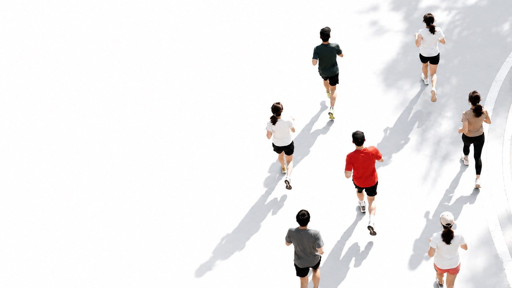
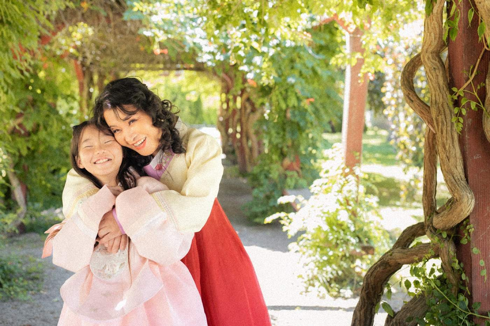
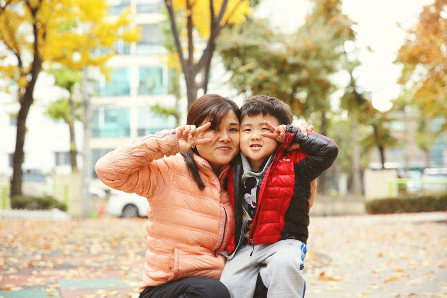
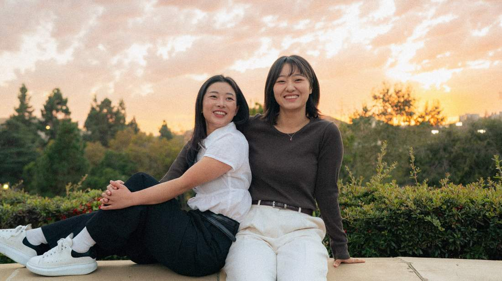
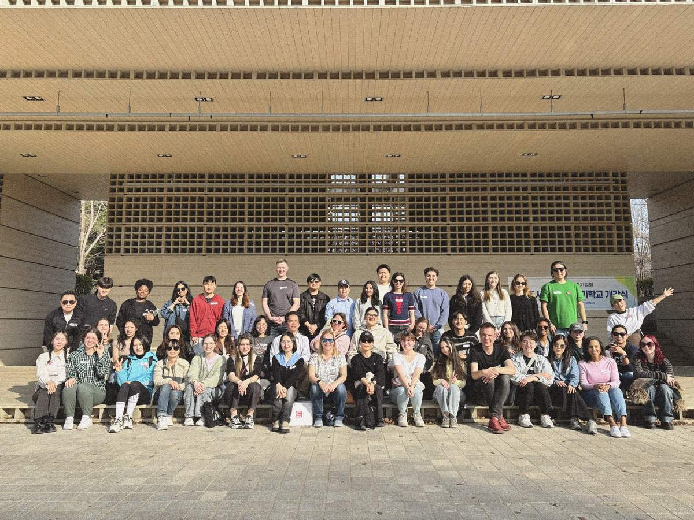
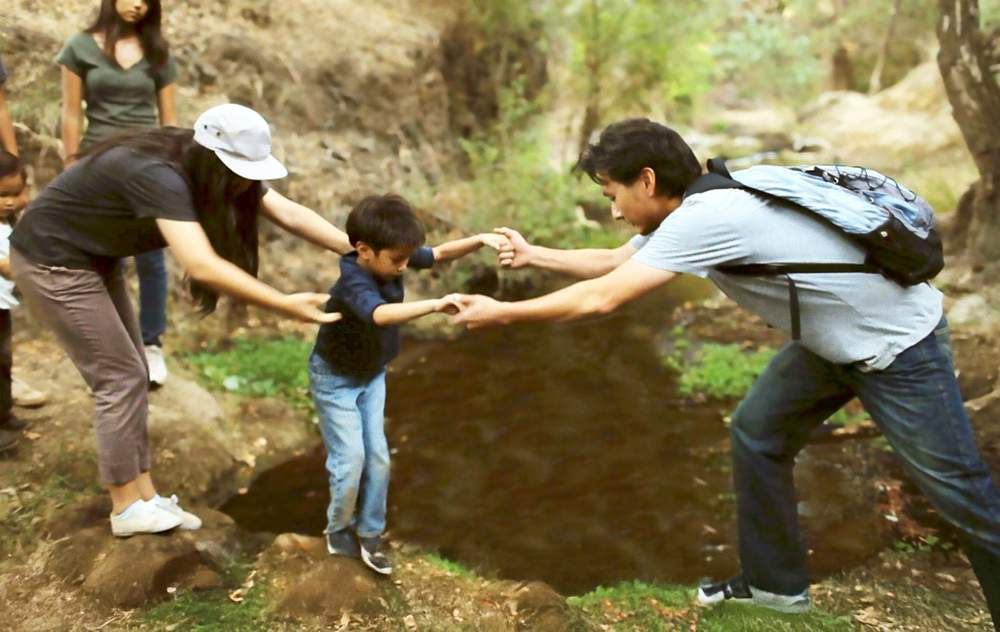
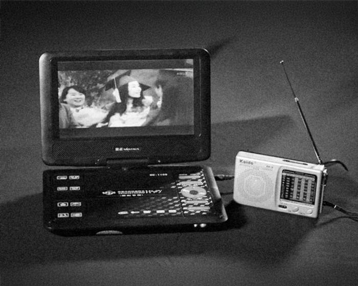

AI 생성 이미지행사 안내
가을 단풍으로 물든 반포한강공원 일대를 걷거나 뛰며 몸과 마음에 힐링을 선물해요.
링크 프로그램의 한국과 북한, 그리고 세계 각국 출신 참가자들과 아름다운 추억을 만들어요.
참가비 외에 링크 활동을 추가로 후원하고 싶으신 분은 아래 자주 묻는 질문이나 참가 신청서를 확인해 주세요.
코스 위의 세 가지 자유
세빛섬 수변무대에서 출발해 편도 3km 지점에서 반환하는 왕복 6km 수변 코스예요. 코스는 북한 사람들의 용기와 희망을 따라가는 세 가지 테마로 이어져요.
2km마다, 하나의 자유
이 행사는 북한 사람들의 용기와 희망을 담은 세 가지 테마로 진행돼요. 구간을 열면 그 길에 담긴 이야기를 볼 수 있어요.
0~2K떠날 자유Freedom to Leave탈북, 그리고 자유를 향한 여정이에요

"지금은 '돕는다'기보다, 엄청난 역경을 견뎌낸 사람들을 만나는 일이라고 느껴요."
링크 구호팀 매니저가 현장에서 남긴 말이에요. 국경을 넘는 길은 짧지 않고, 그 길을 지나온 분들은 각자의 방법으로 끝까지 걸었어요. 첫 2km는 자유를 향한 여정과 북한 난민 구호를 위해 함께 뛰어요.
2~4K이끌 자유Freedom to Lead새로운 사회에서 꿈과 목표를 이루어가는 여정이에요

"태어나서 이렇게 여왕 대접 받기는 처음이에요."
자유에 닿은 밤, 작은 케이크에 촛불을 켜며 이렇게 말한 분이 있어요. 지금은 한국에서 작은 가게를 꾸리고, 얼마 전에는 사랑하는 사람과 결혼했다는 소식을 전해왔어요. 2km에서 4km 구간은 북한 사람들의 정착과 역량강화를 위해 함께 뛰어요.
4~6K알 자유Freedom to Learn북한에 남아 있는 가족과 친구들을 위한 활동이에요

"통제를 아무리 해도, 호기심은 없앨 수가 없어요."
외부 정보는 북한 사람들에게 바깥 세상을 접하는 창구이며, 나아가 스스로의 힘으로 생각하고 판단하는 기회와 도구가 돼요. 몸이 넘기 어려운 국경을 드라마 한 편과 USB 하나가 먼저 넘어요. 마지막 2km는 정보의 흐름, 앎의 자유를 위해 함께 뛰어요.
* 인용은 링크 구호팀 매니저의 기고와 링크 블로그(규리 님 인터뷰)에서 옮긴 문장이에요. 사진은 링크 연례 보고서에 게재된 사진이에요.
행사장 곳곳에도 링크와 탈북민들이 만들어가는 변화에 동참할 수 있는 다양한 기회가 준비되어 있어요.
참가자 기프트
티셔츠부터 완주 메달까지, 참가하시는 모든 분께 드려요.
기념 티셔츠
참가 신청 때 S부터 3XL까지 원하는 사이즈를 고를 수 있어요.
완주 메달
상자를 닮은 사각 메달을 준비하고 있어요. 걷기 참가자분들께도 똑같이 드려요.
배번호표
나의 번호를 가슴에 달고 함께 출발해요.
참가자 간식
협찬 단체가 제공하는 생수와 에너지바예요.
개인용품 세트
협찬사가 제공하는 선크림, 비타민C, 프로틴 젤리예요.
추가 구성
기프트 구성이 더해지면 확정되는 대로 이곳에서 공개할게요.
* 굿즈 이미지는 디자인 시안이에요. 실물과 다를 수 있고, 확정되면 실물 사진으로 교체돼요.
걷고 달리는 이유는 달라도 돼요.
어떤 이유로 출발선에 서든, 이날의 6km는 같은 방향을 향해요.
참가비의 쓰임
참가비 전액은 모든 북한 사람들이 자유롭게 사는 날을 위한 링크의 프로그램들에 사용될 예정이에요.

탈북민 역량 강화
언어 교육과 멘토링, 장학금으로 북한 출신 청년들이 변화를 이끄는 인재로 성장하도록 함께해요.
5만 원이면 링크 영어 회화 프로그램 학생 2명의 한 학기 교재가 돼요.

북한 난민 구호
지금까지 북한 난민과 그 자녀 1,400명이 링크와 함께 자유를 찾았어요. 중국 등 제3국에서 위험에 처한 북한 난민과 해외 거주 북한 주민을 위한 활동이에요.
안전한 곳에 닿기까지 필요한 교통비 · 통신비 같은 필수 비용에 쓰여요.

정보 접근 지원
북한 사람들이 외부 정보에 안전하게 닿도록 기술과 경로를 만들어요.
탈북민 협력자와 함께 콘텐츠를 고르고 테스트하는 비용에 쓰여요.
국제 인식 전환
애드보커시와 언론 협력, 미디어 제작으로 더 많은 사람들이 북한을 새롭게 이해하고 행동에 동참하게 해요.
북한 사람들의 이야기를 전하는 글로벌 미디어 제작 비용에 쓰여요.
* 프로그램별 비용 예시는 확정되는 대로 더해져요.
행사 당일 일정
등록에 여유를 가지실 수 있도록 오후 1시 30분까지 도착하시길 권해요.
-
13:00 ~ 14:10
세빛섬 수변무대 앞
참가자 등록 · 네트워킹
배번호표와 기프트를 받고, 함께 걷고 달릴 분들과 인사를 나눠요.
-
14:10 ~ 14:30
세빛섬 수변무대
환영 인사 · 오리엔테이션 · 준비 운동
단체 소개와 행사 안내를 듣고, 다 함께 몸을 풀어요.
-
14:30 ~ 16:30
반포한강공원 일대
6km 달리기 · 걷기
편도 3km 지점에서 반환하는 왕복 코스예요. 달리기 그룹이 먼저 출발하고, 5분 뒤 걷기 그룹이 출발해요.
-
16:30 ~ 17:00
세빛섬 수변무대
완주 기념 행사
기념품 전달과 단체 사진까지 함께해요.
-
17:00 ~ 18:00
수변무대 · 근처 잔디밭
뒤풀이 · 네트워킹
원하시는 분들만 남아 편하게 어울려요.
함께하는 후원 · 협찬사
삼양사
유유제약
서울국제학교 링크팀
함께할 곳들
더 많은 후원 · 협찬사를 준비하고 있어요. 확정되는 대로 이곳에서 소개해 드릴게요.
자주 묻는 질문
참가비 5만 원은 어디에 쓰이나요?
참가비 전액은 모든 북한 사람들이 자유롭게 사는 날을 위한 링크의 프로그램에 쓰여요. 네 가지 활동으로 나뉘어 쓰이는데, 자세한 내용은 참가비의 쓰임에서 볼 수 있어요.
참가 신청은 어떻게 하나요?
참가 신청은 2026년 8월 28일부터 10월 20일까지, 선착순 200명이에요. 참가 신청서를 작성하고 참가비를 입금하면 신청이 완료돼요. 신청서는 8월 28일 이 페이지에서 열려요.
참가비 결제는 어떻게 하나요?
참가 신청서를 작성한 뒤, 아래 계좌로 참가비 5만 원을 입금하시면 신청이 완료돼요. 입금까지 완료된 참가자분께 참가 확정 이메일을 보내드려요.
참가비 입금 계좌 · KEB하나은행 174-890023-16404 (예금주: 링크)
단체 신청 및 결제가 가능한가요?
네, 가능해요. 행사 총괄 노지현 담당자(010-6518-1559, jroh@libertyinnorthkorea.org)에게 문의해 주세요.
참가비 외에 링크 활동을 추가로 후원하고 싶어요. 어떻게 하면 되나요?
참가비 5만 원 외에도 북한 난민 구호, 탈북민 교육·활동 지원, 북한 주민 정보 접근성 향상 등 링크의 활동에 추가로 기부할 수 있어요. 추가 기부를 원하시는 분은 아래 계좌로 직접 이체해 주시면 기부금 영수증을 발급받으실 수 있어요. (이체한 명의로만 기부금 영수증 발급이 가능해요)
추가 기부 계좌 · 국민은행 004401-04-200526 (예금주: (재)한빛누리 (링크))
참가 연령 제한이 있나요?
만 14세 이상은 개인 참가가 가능해요. 만 14세 미만 어린이는 보호자와 함께 참가해 주세요.
유모차나 반려동물을 동반해 참가할 수 있나요?
반포한강공원 일대 코스에 폭이 좁은 구간이 있어, 참가자 여러분의 안전을 위해 유모차·반려동물 동반 참가는 어려워요. 양해 부탁드려요.
티셔츠는 사이즈 선택이나 교환이 가능한가요?
참가 신청서를 작성할 때 원하시는 사이즈(S~3XL)를 선택할 수 있어요. 신청 완료 이후에는 사이즈를 변경할 수 없어요.
제품 측정 방식에 따라 1~3cm 정도 차이가 있을 수 있으니, 사이즈 가이드를 확인한 뒤 신청해 주세요.
행사날 어디로 몇 시까지 도착해야 하나요?
행사는 오후 2시에 시작하지만, 등록에 여유를 가지실 수 있도록 오후 1시 30분까지 도착하시길 권해요. 반포한강공원 세빛섬 수변무대 앞에서 모여요.
주차와 대중교통 접근 방법은 어떻게 되나요?
행사장에는 별도의 주차 공간이 마련되지 않아요. 행사 당일 반포한강공원 인근의 교통 혼잡이 예상되니, 가급적 대중교통을 이용해 주세요.
기록 측정을 하나요?
이번 행사에서는 기록을 측정하지 않아요. 순위나 등수 없이, 각자의 속도로 6km를 완주하는 하루예요.
우천 시에도 정상 진행되나요?
비가 내려도 행사는 예정대로 진행돼요. 다만 태풍, 폭우, 벼락처럼 참가자 안전을 위협할 수 있는 악천후가 예상되면, 주최 측 판단에 따라 일정이 조정되거나 행사가 취소될 수 있어요.
결정 사항은 이메일과 문자 메시지로 참가자분들께 개별 안내해 드려요.
원하는 답변을 찾지 못하셨나요?
행사 총괄 노지현 담당자(010-6518-1559, jroh@libertyinnorthkorea.org)에게 문의해 주세요.
가을 한강에서 만나요.
10월 24일 토요일 오후 2시, 반포한강공원 세빛섬 수변무대.
참가 신청은 8월 28일부터 10월 20일까지, 선착순 200명이에요.
신청 페이지가 열리면 이 버튼으로 바로 연결돼요.